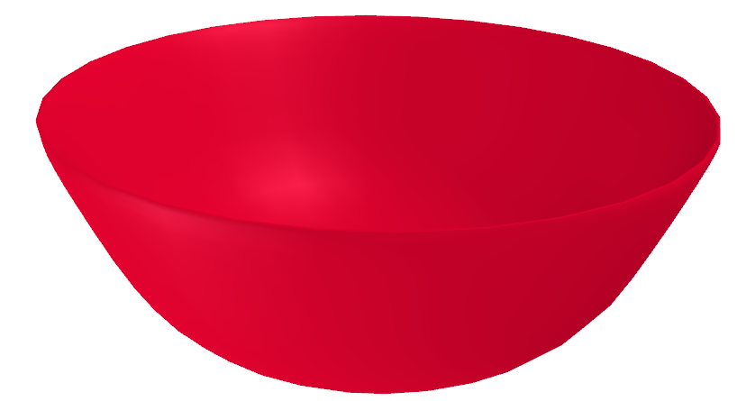
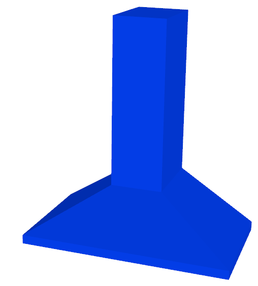

Procedural Assets & Procedural Scenes
The submodule procedural_assets contains a number of parametric assets such as tables, shelves, and cabinets that can be instantiated and added to a scene.
Furniture and Appliance Assets
Procedurally generate assets with randomized parameters.
- class scene_synthesizer.procedural_assets.BaseCabinetAsset(*args, **kwargs)
A base kitchen cabinet. A specialization of the CabinetAsset. It has optional drawers on top of a row of optional doors and a small foot panel.
- Parameters:
width (float, optional) – Width of the cabinet. Defaults to 0.76.
depth (float, optional) – Depth of the cabinet. Defaults to 0.73.
height (float, optional) – Height of the cabinet. Defaults to 0.92.
num_drawers_horizontal (int, optional) – Number of drawers next to each other. None equals number of doors below. Defaults to None.
num_drawers_vertical (int, optional) – Number of drawers in the vertical direction. Defaults to 1.
lower_compartment_types (tuple, optional) – Tuple of door types next to each other. Defaults to (“door_right”, “door_left”).
num_shelves (int, optional) – Number of shelves inside lower compartment. Defaults to 1.
drawer_height (float, optional) – Height of the drawers. Defaults to 0.2.
foot_panel_height (float, optional) – Height of the foot panel. Defaults to 0.04.
frontboard_thickness (float, optional) – Thickness of the frontboards/doors. Defaults to 0.02.
wall_thickness (float, optional) – Thickness of the exterior walls. Defaults to 0.02.
inner_wall_thickness (float, optional) – Thickness of the interior walls. Defaults to 0.01.
handle_width (float, optional) – Width of handle. Defaults to 0.1682.
handle_height (float, optional) – Height of handle. Defaults to 0.038.
handle_depth (float, optional) – Depth of handle. Defaults to 0.024.
handle_offset (tuple[float, float], optional) – Offset of handle. Defaults to None.
handle_shape_args (dict, optional) – Arguments for procedural handle shape generator. Defaults to None.
door_shape_args (dict, optional) – Arguments for procedural door shape generator. Defaults to None.
{kind=link}
- class scene_synthesizer.procedural_assets.BinAsset(*args, **kwargs)
A storage bin asset (rectangular bottom and four rectangular sides). Optionally, the sides can be angled.
- Parameters:
width (float, optional) – Width of storage bin. Defaults to 0.5.
depth (float, optional) – Depth of storage bin. Defaults to 0.12.
height (float, optional) – Height of storage bin. Defaults to 0.12.
thickness (float, optional) – Thickness of bottom and walls. Defaults to 0.005.
angle (float, optional) – Angle in radians to create slanted side walls. Needs to be in (-pi/2, +pi/2). Positive means outward slope. Defaults to 0.
use_primitives (bool, optional) – Will use five box primitives to construct bin. Note, that angle will be ignored. Defaults to False.
**kwargs – Arguments will be delegated to constructor of TrimeshAsset.
{kind=link}
- class scene_synthesizer.procedural_assets.BowlAsset(*args, **kwargs)
A bowl.
- Parameters:
width (float, optional) – Width of the bowl. Defaults to 0.15.
height (float, optional) – Height of the bowl. Defaults to 0.06.
thickness (float, optional) – Thickness of the bowl. Defaults to 0.005.
num_sections_width (int, optional) – Discretization along width. Defaults to 32.
num_sections_height (int, optional) – Discretization along height. Defaults to 16.
bottom_flatness_radius (float, optional) – Area at the bottom of the bowl that will be totally flat. Defaults to 0.05.
bottom_radius_factor (float, optional) – Roundness of the bottom edges. Defaults to 0.6.
lip_angle (float, optional) – Angle of the outer lip of the bowl in rad. Defaults to np.pi/2.0.
{kind=link}
- class scene_synthesizer.procedural_assets.BoxWithHoleAsset(*args, **kwargs)
An asset representing a box with a hole. The hole can be specified along any of the three dimensions. To specify the hole, only pass two out of the three hole arguments: If hole_width=None, then the hole will be along x. If hole_depth=None, then the hole will be along y. If hole_height=None, then the hole will be along z.
- Parameters:
width (float) – Width of the box.
depth (float) – Depth of the box
height (float) – Height of the box.
hole_width (float, optional) – Width of the hole. Defaults to None.
hole_depth (float, optional) – Depth of the hole. Defaults to None.
hole_height (float, optional) – Height of the hole. Defaults to None.
hole_offset (tuple[float], optional). The offset of the hole from the center of the box. Defaults to (0, 0) –
use_primitives (bool, optional) –
- class scene_synthesizer.procedural_assets.CNCMachineAsset(*args, **kwargs)
A simple asset looking like an industrial CNC machine, useful for industrial manipulation tasks. The model consists of a prismatic sliding door, with a parameterizable handle, nine square buttons and two round ones.
- Parameters:
width (float, optional) – Width of the model. Defaults to 5.3.
depth (float, optional) – Depth of the model. Defaults to 3.1.
height (float, optional) – Height of the model. Defaults to 2.3.
handle_length (float, optional) – Length of the handle. Defaults to 0.66.
handle_thickness (float, optional) – Thickness of the handle. Defaults to 0.05.
handle_depth (float, optional) – Depth of the Handle. Defaults to 0.15.
handle_offset (tuple, optional) – Offset of the handle relative to the door in the model’s XY plane. Defaults to (-0.1, 0.1).
handle_shape_args (dict, optional) – Dictionary of shape parameters for the handle. Defaults to { “straight_ratio”: 0.95, “curvature_ratio”: 0.5, “num_segments_cross_section”: 10, “num_segments_curvature”: 16, “aspect_ratio_cross_section”: 1.0, “tmp_mesh_dir”: “/tmp”, }.
button_size (float, optional) – Size of the buttons. If None or 0.0 no buttons will be added. Buttons are articulated. Defaults to 0.03.
button_panel_offset (tuple, optional) – Offset of the button panel relative to the left front part of the machine. Defaults to (0, 0).
window_size (float, optional) – Relative size of the window in the front door. Number between 0.0 (no window) and 1.0 (full window). Defaults to 0.
{kind=link}
- class scene_synthesizer.procedural_assets.CabinetAsset(*args, **kwargs)
A cabinet.
- Parameters:
width (float) – Width of the cabinet or None. If None compartment_widths are used as absolute sizes otherwise relative ones.
depth (float) – Depth of the cabinet (excluding possible handles).
height (float) – Height of the cabinet or None. If None compartment_heights are used as absolute sizes otherwise relative ones.
compartment_mask (list[list[int]] or np.ndarray) – A 2D matrix of type int which represents the segmentation map of the cabinet layout. Same numbers indicate same compartment.
compartment_types (list[str]) – A list of strings of [“none”, “open”, “closed”, “door_left”, “door_right”, “door_top”, “door_bottom”, “drawer”] depending on the type of the i-th compartment (i being the entry in the compartment_mask).
compartment_interior_masks (dict[list[list[int]] or dict[np.ndarray], optional) – A dictionary of compartment masks that represent the internal structure of a single compartment (e.g. multiple shelves behind a door). The dictionary key is the entry to the compartment_mask. Defaults to None.
outer_wall_thickness (float, optional) – Thickness of outer walls of the cabinet. Defaults to 0.01.
inner_wall_thickness (float, optional) – Thickness of inner walls and surfaces of the cabinet.
drawer_wall_thickness (float, optional) – Thickness of drawer walls and surfaces.
frontboard_thickness (float, optional) – Thickness of front boards.
frontboard_overlap (float, optional) – Overlap of front boards with outer and inner walls, between 0 (no overlap) and 1 (maximum overlap). Defaults to 0.0.
compartment_widths (list[float], optional) – List of widths of compartment columns. Must have as many elements as compartment_mask has columns. If None all columns have equal width that sum to width. Is considered relative if width is defined. Defaults to None.
compartment_heights (list[float], optional) – List of heights of compartment rows. Must have as many elements as compartment_mask has rows. If None all rows have equal heights that sum to height. Is considered relative if height is defined. Defaults to None.
handle_width (float, optional) – Defaults to 0.1682.
handle_height (float, optional) – Defaults to 0.038.
handle_depth (float, optional) – Defaults to 0.024.
handle_offset (tupe(float, float), optional) – Defaults to None.
handle_shape_args (dict, optional) – Arguments for procedural handles. If None, will create handle made out of boxes. Defaults to None.
door_shape_args (dict, optional) – Arguments for procedural door moldings. If None, will create box-shaped door. Defaults to None.
- Raises:
ValueError – If neither width nor compartment_widths is defined.
ValueError – If neither height nor compartment_heights is defined.
ValueError – If compartment type is unknown.
{kind=link}
- class scene_synthesizer.procedural_assets.CabinetDoorAsset(*args, **kwargs)
Procedural cabinet door asset based on revolving a B-Spline around its y-axis to create molding.
- Parameters:
width (float) – Width of the resulting cabinet door.
height (float) – Height of the resulting cabinet door.
depth (float) – Depth of the resulting cabinet door.
inner_depth_ratio (float, optional) – Defaults to 0.0.
outer_depth_ratio (float, optional) – Defaults to 1.0.
trim_depth_ratio (float, optional) – Defaults to 1.0.
trim_width_ratio (float, optional) – Defaults to 0.0.
trim_outer_offset_ratio (float, optional) – Defaults to 0.3.
knot_0 (float, optional) – A knot of the B-spline used to interpolate the silhoutte. Defaults to 0.5.
knot_1 (float, optional) – A knot of the B-spline used to interpolate the silhoutte. Defaults to 0.6.
knot_2 (float, optional) – A knot of the B-spline used to interpolate the silhoutte. Defaults to 0.7.
knot_3 (float, optional) – A knot of the B-spline used to interpolate the silhoutte. Defaults to 0.8.
num_depth_sections (int, optional) – Number of interpolated sections along B-Spline. Defaults to 20.
use_primitives (bool, optional) – Defaults to False.
{kind=link}
- class scene_synthesizer.procedural_assets.CubbyShelfAsset(*args, **kwargs)
A shelf composed of individual cubbies. In contrast to CabinetAsset, each cubby has a separate left, right, top, bottom, and back wall geometry. This allows e.g. to render segmentation maps that highlight individual cubbies based on their geometry (this wouldn’t be possible with CabinetAsset). In contrast to CabinetAsset, the resulting shelf will have more geometries/boxes.
- Parameters:
width (float) – Width of the shelf or None. If None compartment_widths are used as absolute sizes otherwise relative ones.
depth (float) – Depth of the shelf (excluding possible handles).
height (float) – Height of the shelf or None. If None compartment_heights are used as absolute sizes otherwise relative ones.
compartment_mask (list[list[float]] or np.ndarray) – A 2D matrix of type int which represents the segmentation map of the shelf layout. Same numbers indicate same compartment.
compartment_types (list[str]) – A list of strings of [“none”, “open”, “closed”, “door_left”, “door_right”, “door_top”, “door_bottom”, “drawer”] depending on the type of the i-th compartment (i being the entry in the compartment_mask).
compartment_widths (list[float], optional) – List of widths of compartment columns. Must have as many elements as compartment_mask has columns. If None all columns have equal width that sum to width. Is considered relative if width is defined. Defaults to None.
compartment_heights (list[float], optional) – List of heights of compartment rows. Must have as many elements as compartment_mask has rows. If None all rows have equal heights that sum to height. Is considered relative if height is defined. Defaults to None.
wall_thickness (float, optional) – Thickness of walls of the cubbies. Defaults to 0.01.
handle_width (float, optional) – Defaults to 0.1682.
handle_height (float, optional) – Defaults to 0.038.
handle_depth (float, optional) – Defaults to 0.024.
handle_offset (tupe(float, float), optional) – Defaults to None. x-z offset for handle placement location.
handle_shape_args (dict, optional) – Arguments for handles. If None, will create handle made out of boxes. Defaults to None.
door_shape_args (dict, optional) – Arguments for procedural door moldings. If None, will create box-shaped door. Defaults to None.
- Raises:
ValueError – If neither width nor compartment_widths is defined.
ValueError – If neither height nor compartment_heights is defined.
ValueError – If compartment type is unknown.
{kind=link}
- class scene_synthesizer.procedural_assets.DishwasherAsset(*args, **kwargs)
A dishwasher.

- Parameters:
width (float, optional) – Width of dishwasher. Defaults to 0.76.
depth (float, optional) – Depth of dishwasher. Defaults to 0.73.
height (float, optional) – Height of dishwasher. Defaults to 0.92.
control_panel_height (float, optional) – Height of control panel. Defaults to 0.1.
foot_panel_height (float, optional) – Height of base / foot panel. Defaults to 0.04.
wall_thickness (float, optional) – Thickness of outer walls. Defaults to 0.02.
handle_length (float, optional) – Length of handle. Defaults to 0.66.
handle_thickness (float, optional) – Thickness of handle. Defaults to 0.05.
handle_depth (float, optional) – Depth of handle. Defaults to 0.04.
handle_offset (float, optional) – Offset of handle. Defaults to 0.04.
handle_shape_args (dict, optional) – Handle shape parameters. Defaults to { “straight_ratio”: 0.7, “curvature_ratio”: 0.7, “num_segments_cross_section”: 10, “num_segments_curvature”: 6, “aspect_ratio_cross_section”: 0.5, “tmp_mesh_dir”: “/tmp”, }.
- Raises:
ValueError – If handle_width is bigger than width.
- class scene_synthesizer.procedural_assets.GlassAsset(*args, **kwargs)
A glass.
- Parameters:
width (float, optional) – Width of the glass. Defaults to 0.07.
height (float, optional) – Height of the glass. Defaults to 0.16.
thickness (float, optional) – Thickness of the glass. Defaults to 0.003.
num_sections_width (int, optional) – Discretization along width. Defaults to 16.
num_sections_height (int, optional) – Discretization along height. Defaults to 16.
bottom_flatness_radius (float, optional) – Area of the bottom of the glass that should be completely flat. Defaults to 0.02.
bottom_radius_factor (float, optional) – Roundness of the bottom edges of the glass. Defaults to 1.25.
{kind=link}
- class scene_synthesizer.procedural_assets.HandleAsset(*args, **kwargs)
Procedural handle asset.
- Parameters:
width (float) – Width of handle.
height (float) – Height of handle.
depth (float) – Depth of handle.
straight_ratio (float) – A handle consists of two curved ends and a straight part in-between. This is the length of the straight part. Defined as a ratio of the total width. Must be >=0.
curvature_ratio (float) – A curvature parameter between 0 and 1.0. 0 is not smooth, 1.0 is maximally smooth.
num_segments_curvature (int) – Number of segments of the handle’s spine.
num_segments_cross_section (int) – The cross section of the handle is a discritized ellipse with num_segments_cross_segmentation many segments. In case of four, a rectangle/square is created.
aspect_ratio_cross_section (float, optional) – Aspect ratio of the ellipse of the cross section. Defaults to 1.0.
**kwargs – Arguments will be delegated to constructor of TrimeshAsset.
- Returns:
A handle.
- Return type:
{kind=link}
- class scene_synthesizer.procedural_assets.KitchenIslandAsset(*args, **kwargs)
A kitchen island consisting of cabinets, drawers and open shelves below a countertop.
- Parameters:
width (float, optional) – Width of the island. Defaults to 1.22.
depth (float, optional) – Depth of the island. Defaults to 0.64.
height (float, optional) – Height of the island. Defaults to 0.91.
depth_storage (float, optional) – Depth of storage cabinets. Defaults to 0.35.
depth_side_storage (float, optional) – Depth of open side compartments. Defaults to 0.1.
countertop_thickness (float, optional) – Thickness of countertop. Defaults to 0.03.
frontboard_thickness (float, optional) – Thickness of cabinet doors. Defaults to 0.02.
wall_thickness (float, optional) – Outer wall thickness of cabinets. Defaults to 0.01.
handle_width (float, optional) – Width of handles. Defaults to 0.1682.
handle_height (float, optional) – Height of handles. Defaults to 0.038.
handle_depth (float, optional) – Depth of handles. Defaults to 0.024.
handle_offset (tuple[float, float], optional) – Offset of handles. Defaults to (0.18, 0.05).
handle_shape_args (dict, optional) – Handle shape parameters. Defaults to None.
door_shape_args (dict, optional) – Door shape parameters. Defaults to None.
- Raises:
ValueError – If depth_storage is bigger than depth.
ValueError – If depth_side_storage is bigger than width/2.0.
{kind=link}
- class scene_synthesizer.procedural_assets.KnobAsset(*args, **kwargs)
Procedural knob asset based on revolving a B-Spline around its x-axis.
The origin is at the base of the knob, z-axis along protrusion.
- Parameters:
width (float) – Width of the resulting knob.
height (float) – Height of the resulting knob.
depth (float) – Depth of the resulting knob.
base_ratio (float, optional) – A ratio in ]0, 1[ indicating the diameter of the stem of the knob in relation to the full width. Defaults to 0.5.
knob_ratio (float, optional) – A ratio in ]0, 1[ indicating the depth of the knob in relation to the full depth. Defaults to 0.5.
knot_0 (float, optional) – A knot of the B-spline used to interpolate the silhoutte. Defaults to 0.43.
knot_1 (float, optional) – A knot of the B-spline used to interpolate the silhoutte. Defaults to 0.57.
num_sections (int, optional) – Number of interpolated sections during revolution of B-spline around its x-axis. Can be used to create different knob shapes, such as triangules and squares. Defaults to 32.
num_depth_sections (int, optional) – Number of interpolated sections along B-Spline. Defaults to 20.
{kind=link}
- class scene_synthesizer.procedural_assets.MicrowaveAsset(*args, **kwargs)
A microwave oven asset.
- Parameters:
width (float) – Width of microwave.
depth (float) – Depth of microwave.
height (float) – Height of microwave.
thickness (float) – Thickness of walls and door.
display_panel_width (float) – Width of the side panel. Must be smaller than width.
handle_left (bool, optional) – Microwave door opens to the left or right. Defaults to True.
handle_depth (float, optional) – Depth of handle.
handle_thickness (float, optional) – Thickness of handle.
handle_length (float, optional) – Length of handle. Defaults to None which means height - handle_depth.
handle_straight_ratio (float, optional) – Defaults to 0.4.
handle_num_segments_cross_section (float, optional) – Defaults to 8.
handle_num_segments_curvature (float, optional) – Defaults to 5.
handle_aspect_ratio_cross_section (float, optional) – Defaults to 0.5.
tmp_mesh_dir (str, optional) – Directory to generate mesh. Defaults to /tmp.
**kwargs – Arguments will be delegated to constructor of Asset.
{kind=link}
- class scene_synthesizer.procedural_assets.MugAsset(*args, **kwargs)
A mug.
- Parameters:
width (float, optional) – Width of the mug. Defaults to 0.1.
height (float, optional) – Height of the mug. Defaults to 0.12.
thickness (float, optional) – Thickness of the mug material. Defaults to 0.005.
num_sections_width (int, optional) – Mesh discretization along width. Defaults to 16.
num_sections_height (int, optional) – Mesh discretization along height. Defaults to 16.
bottom_flatness_radius (float, optional) – Area that should be totally flat at the bottom of the mug. Defaults to 0.03.
bottom_radius_factor (float, optional) – Affects the roundness of the bottom edges of the mug. Defaults to 1.25.
handle_width (float, optional) – Width of the mug handle. Defaults to 0.015.
handle_depth (float, optional) – Depth of the mug handle. Defaults to 0.04.
handle_height (float, optional) – Height of the mug handle. Defaults to 0.08.
handle_num_sections_height (int, optional) – Handle mesh discretization along height. Defaults to 16.
handle_num_segments_cross_section (int, optional) – Handle mesh discretization along depth. Defaults to 8.
handle_aspect_ratio_cross_section (float, optional) – Aspect ratio of mug handle cross-section. Same parameter as in HandleAsset. Defaults to 0.5.
handle_straight_ratio (float, optional) – Same parameter as in HandleAsset. Defaults to 1.25.
handle_curvature_ratio (float, optional) – Same parameter as in HandleAsset. Defaults to 5.0.
{kind=link}
- class scene_synthesizer.procedural_assets.PlateAsset(*args, **kwargs)
A plate.
- Parameters:
width (float, optional) – Width of the plate. Defaults to 0.3.
height (float, optional) – Height of the plate. Defaults to 0.02.
thickness (float, optional) – Thickness of the plate. Defaults to 0.005.
num_sections_width (int, optional) – Mesh discretization along circumference. Defaults to 32.
num_sections_height (int, optional) – Mesh discretization along diameter. Defaults to 8.
bottom_flatness_radius (float, optional) – Area of the bottom of the plate that will be completely flat. Defaults to 0.02.
bottom_radius_factor (float, optional) – Roundness of the plate. Defaults to 0.8.
lip_angle (float, optional) – Angle of the outer lip of the plate. Defaults to np.pi/4.0.
{kind=link}
- class scene_synthesizer.procedural_assets.RangeAsset(*args, **kwargs)
A range asset.
- Parameters:
width (float, optional) – The width of the range. Defaults to 0.76.
depth (float, optional) – The depth of the range. Defaults to 0.73.
height (float, optional) – The height of the range. Defaults to 0.92.
control_panel_height (float, optional) – The height of the control panel for the stovetop. Defaults to 0.1.
oven_height (float, optional) – Height of the oven compartment. Defaults to 0.7.
storage_height (float, optional) – Height of the storage drawer at the bottom. Defaults to 0.2.
stove_plate_height (float, optional) – Stovetop burner height. Defaults to 0.01.
stove_plate_radius (float, optional) – Stovetop burner radius. Defaults to 0.1.
wall_thickness (float, optional) – Thickness of outer walls. Defaults to 0.02.
handle_length (float, optional) – Length of handles. Defaults to 0.66.
handle_thickness (float, optional) – Thickness of handles. Defaults to 0.04.
handle_depth (float, optional) – Depth of handles. Defaults to 0.04.
handle_offset (float, optional) – Offset of handles. Defaults to 0.04.
handle_shape_args (dict, optional) – Handle shape parameters. Defaults to { “straight_ratio”: 0.7, “curvature_ratio”: 0.7, “num_segments_cross_section”: 10, “num_segments_curvature”: 6, “aspect_ratio_cross_section”: 0.5, “tmp_mesh_dir”: “/tmp”, }.
door_shape_args (dict, optional) – Defaults to {‘use_primitives’:True, ‘trim_width_ratio’:0.4, ‘inner_depth_ratio’:0.1}.
- Raises:
ValueError – If handle_length is larger than width.
{kind=link}
- class scene_synthesizer.procedural_assets.RangeHoodAsset(*args, **kwargs)
A range hood / extractor hood / kitchen hood asset.
- Parameters:
width (float, optional) – Width of the range hood. Defaults to 0.92.
depth (float, optional) – Depth of the range hood. Defaults to 0.51.
height (float, optional) – Height of the range hood. Defaults to 1.0.
duct_width (float, optional) – Width of the duct. Defaults to 0.23.
duct_depth (float, optional) – Depth of the duct. Defaults to 0.33.
duct_offset (tuple, optional) – Offset of the duct in the xy-plane. Defaults to (0, 0).
pyramid_height (float, optional) – Height of the pyramidically shaped blower box. Defaults to 0.22.
control_panel_height (float, optional) – Height of the control panel. Defaults to 0.04.
use_primitives (bool, optional) – Use primitve shapes only. Defaults to False.
- Raises:
ValueError – If duct_height + pyramid_height exceed the total height.
{kind=link}
- class scene_synthesizer.procedural_assets.RecursivelyPartitionedCabinetAsset(*args, **kwargs)
Procedural cabinet generator based on recursive splitting of compartments. Based on: Jan Czarnowski’s CabGen.
- Parameters:
width (float) – Width of cabinet.
depth (float) – Depth of cabinet.
height (float) – Height of cabinet.
thickness (float) – Thickness of outer cabinet walls.
wall_thickness (float, optional) – Thickness of inner cabinet walls, between compartments. Defaults to 0.01.
split_prob (float, optional) – The probability of splitting a compartment into two. Defaults to 1.0.
split_decay (float, optional) – The decay rate of the splitting probability for each level of recursion. Defaults to 0.65.
articulation_type_prob (list[float], optional) – If not None, all compartments will be of type “drawer”, “door”, or “none” according to the probabilities assigned by this 3-element list/tuple. Defaults to None.
door_left_prob (float, optional) – Cabinet doors will open according to the this probability (“right” == 1-left). Defaults to 0.5.
additional_compartment_floor_height (float, optional) – Adds another box inside each empty/revolute door compartment if value is greater than 0.0 that serves as the floor of the compartment. This helps when identifying container volumes. Defaults to 0.0.
name (str, optional) – Name of cabinet. Will be used for link name. Defaults to “Cabinet”.
force_one_primitive_per_link (bool, optional) – Whether to create a single link for the drawer and cabinet bodies (w/ multiple visuals/collsions). Or to create one link per visual/collision. This allows to keep information about geometric primitives. Defaults to False.
handle_type (str, optional) – Types of the handle. Defaults to procedural. Valid options “procedural”, “box”, “knob”.
handle_width (float, optional) – Defaults to 0.1682.
handle_depth (float, optional) – Defaults to 0.038.
handle_height (float, optional) – Defaults to 0.024.
handle_offset (float, optional) – Defaults to None.
handle_shape_args (dict, optional) – Arguments for procedural handles. If None, will create handle made out of boxes. Defaults to None.
seed (int, numpy.random._generator.Generator, optional) – A seed or random number generator. Defaults to None which creates a new default random number generator.
{kind=link}
- class scene_synthesizer.procedural_assets.RefrigeratorAsset(*args, **kwargs)
A refrigerator asset with an optional freezer compartment, procedural handle, and beveled door edges.
- Parameters:
width (float) – Width of fridge. Defaults to 0.76.
depth (float) – Depth of fridge. Defaults to 0.76.
height (float) – Height of fridge. Defaults to 1.64.
freezer_compartment_height (float) – Height of the freezer compartment. For no freezer, set to zero. Must be less than height of fridge. Defaults to 0.49
thickness (float) – Thickness of walls (including door). Defaults to 0.07.
num_shelves (int, optional) – Number of shelves inside the refrigerator. Defaults to 4.
num_door_shelves (int, optional) – Number of shelves inside the refrigerator door. Defaults to 3.
door_shelf_depth (float, optional) – The depth of the shelves connected to the inside of the door. The shelves in the fridge corpus will be retracted by the same amoung. Defaults to 0.1.
door_shelf_holder_height (float, optional) – Height of the holding rim above the door shelves. Disappears if zero. Defaults to 0.06.
shelf_thickness (float, optional) –
handle_left (bool, optional) – Whether door opens to left or right. Defaults to True.
handle_vertical (bool, optional) – Whether door handle is vertical or horizontal. Defaults to True.
handle_length (float, optional) – Length of handle(s). Defaults to 0.3.
handle_thickness (float, optional) – Thickness of handle(s). Defaults to 0.07.
handle_depth (float, optional) – Depth of handle(s). Defaults to 0.05.
handle_offset (3-tuple[float], optional) – Offset of handle in lateral direction, direction of height, and direction of depth. Takes handle_left into account. Defaults to (0.03, 0.05, 0.03).
handle_shape_args (dict, optional) – Arguments for procedural handle shape. Defaults to fridge handle.
door_shape_args (dict, optional) – Arguments for procedural door shape. Defaults to fridge door.
**kwargs – Arguments will be delegated to constructor of URDFAsset.
{kind=link}
- class scene_synthesizer.procedural_assets.ShelfAsset(*args, **kwargs)
A shelf asset consisting of an optional back board, N equally spaced shelf boards, and side posts or boards.
For example, to create the shelf of the MotionBenchMaker paper, Fig. 6 (first column), do:
from scene_synthesizer import procedural_assets as pa pa.ShelfAsset( width=0.8, depth=0.8, height=1.8, num_boards=5, num_side_columns=float("inf"), bottom_board=False, cylindrical_columns=False, num_vertical_boards=0, ).scene().colorize().show()
To create the shelf of the MotionBenchMaker paper, Fig. 6 (second column), do:
from scene_synthesizer import procedural_assets as pa pa.ShelfAsset( width=0.8, depth=0.8, height=1.8, num_boards=5, num_side_columns=2, bottom_board=False, cylindrical_columns=True, num_vertical_boards=1, ).scene().colorize().show()
To create the cubby of the MotionBenchMaker paper, Fig. 6 (fourth column), do:
from scene_synthesizer import procedural_assets as pa pa.ShelfAsset( width=0.7, depth=0.7, height=0.35, num_boards=2, num_side_columns=float("inf"), bottom_board=True, cylindrical_columns=False, num_vertical_boards=0, ).scene().colorize().show()
- Parameters:
width (float) – Width of shelf.
depth (float) – Depth of shelf.
height (float) – Height of shelf.
num_boards (int) – Number of boards, equally spaced between 0.0 (depending on bottom_board) and height.
board_thickness (float) – Thickness of each board. Defaults to 0.03.
backboard_thickness (float, optional) – Thickness of back board. If zero no back board is added. Defaults to 0.0.
num_vertical_boards (int, optional) – Number of vertical boards that divide each shelf equally. Defaults to 0.
num_side_columns (int or float('inf'), optional) – Number of columns on each side. If float(‘inf’) a side board is added. Defaults to 2.
column_thickness (float, optional). Radius or side length of side columns (depending on cylindrical_columns) –
bottom_board (bool, optional) – Whether to start with the shelf boards at the bottom level. Defaults to True.
cylindrical_columns (bool, optional) – Cylindrical or box-shaped side columns. Defaults to True.
**kwargs – Arguments will be delegated to constructor of TrimeshSceneAsset.
{kind=link}
{kind=link}
{kind=link}
- class scene_synthesizer.procedural_assets.SinkCabinetAsset(*args, **kwargs)
A cabinet with two doors and a sink on top.
- Parameters:
width (float, optional) – Width of the sink cabinet. Defaults to 0.76.
depth (float, optional) – Depth of the sink cabinet. Defaults to 0.73.
height (float, optional) – Height of the sink cabinet. Defaults to 0.92.
sink_width (float, optional) – Width of the sink. Defaults to 0.4.
sink_depth (float, optional) – Depth of the sink. Defaults to 0.3.
sink_height (float, optional) – Height of the sink. Defaults to 0.2.
sink_offset (tuple, optional) – Offset of the sink. Defaults to (0, 0).
sink_thickness (float, optional) – Thickness of the sink. Defaults to 0.02.
sink_tmp_mesh_dir (str, optional) – Directory for storing (temporary) mesh files. Defaults to “/tmp”.
countertop_thickness (float, optional) – Thickness of countertop. Defaults to 0.03.
wall_thickness (float, optional) – Thickness of outer walls. Defaults to 0.02.
handle_width (float, optional) – Width of handles. Defaults to 0.1682.
handle_height (float, optional) – Heights of handles. Defaults to 0.038.
handle_depth (float, optional) – Depth of handles. Defaults to 0.024.
handle_offset (tuple[float, float], optional) – Offset of handles. Defaults to None.
handle_shape_args (dict, optional) – Handle shape parameters. Defaults to None.
door_shape_args (dict, optional) – Cabinet door shape parameters. Defaults to None.
- Raises:
ValueError – If sink_height is bigger than cabinet height.
{kind=link}
- class scene_synthesizer.procedural_assets.TableAsset(*args, **kwargs)
A table asset consisting of four legs and one surface.
- Parameters:
width (float) – Width of table.
depth (float) – Depth of table.
height (float) – Height of table. Includes thickness of surface.
thickness (float) – Thickness of table surface.
leg_thickness (float) – Diameter (in case of cylindric legs) or side length (in case of box legs) of the table legs.
leg_margin (float) – Percentage between 0 and 1. Distance between edge of table and leg. 0 means no distance. 1 means legs are centered (results in one single leg for table). Defaults to 0.1.
leg_as_box (bool) – Wheter to model legs as cylinders or boxes. Defaults to False.
**kwargs – Arguments will be delegated to constructor of TrimeshSceneAsset.
{kind=link}
- class scene_synthesizer.procedural_assets.WallCabinetAsset(*args, **kwargs)
A wall cabinet. A specialization of the CabinetAsset with two doors.
- Parameters:
width (float, optional) – Width of the wall cabinet. Defaults to 0.762.
depth (float, optional) – Depth of the wall cabinet. Defaults to 0.305.
height (float, optional) – Height of the wall cabinet. Defaults to 0.762.
compartment_types (tuple, optional) – Compartment types. Defaults to (“door_right”, “door_left”).
num_shelves (int, optional) – Number of interior shelves. Defaults to 2.
frontboard_thickness (float, optional) – Thickness of doors. Defaults to 0.02.
wall_thickness (float, optional) – Thickness of outer walls. Defaults to 0.01.
inner_wall_thickness (float, optional) – Thickness of inner walls. Defaults to 0.01.
handle_width (float, optional) – Handle width. Defaults to 0.1682.
handle_height (float, optional) – Handle height. Defaults to 0.038.
handle_depth (float, optional) – Handle depth. Defaults to 0.024.
handle_offset (tuple, optional) – Handle offset. Defaults to (-0.25, 0.05).
handle_shape_args (dict, optional) – Handle shape parameters. Defaults to None.
door_shape_args (dict, optional) – Door shape parameters. Defaults to None.
{kind=link}
Kitchen Scenes
The submodule :py:mod:procedural_scenes contains six different kitchen types that are procedural generated with the furnitures and appliance assets.
- scene_synthesizer.procedural_scenes.kitchen_galley(seed=None, **kwargs)
Kitchen scene with a ⎢⎟-shaped counter space and an alley between.
- Parameters:
seed (int, numpy.random._generator.Generator, optional) – A seed or random number generator. Defaults to None which creates a new default random number generator.
**counter_height (float, optional) – Height of counters.
**counter_depth (float, optional) – Depth of counters.
**counter_thickness (float, optional) – Thickness of counters.
**aisle_width (float, optional) – Width of the center aisle.
**wall_cabinet_z (float, optional) – Z-coordinate of bottom of wall cabinets above ground.
**wall_cabinet_height (float, optional) – Height of cabinets hanging on the wall.
**handle_shape_args (dict, optional) – Dictionary of parameters defining the handle shape.
**door_shape_args (dict, optional) – Dictionary of parameters defining the cabinet door shape.
**refrigerator_args (dict, optional) – Dictionary of parameters that are passed to RefrigeratorAsset.
**range_args (dict, optional) – Dictionary of parameters that are passed to RangeAsset.
**range_hood_args (dict, optional) – Dictionary of parameters that are passed to RangeHoodAsset.
**dishwasher_args (dict, optional) – Dictionary of parameters that are passed to DishwasherAsset.
**wall_cabinet_args (dict, optional) – Dictionary of parameters that are passed to all WallCabinetAsset.
**base_cabinet_args (dict, optional) – Dictionary of parameters that are passed to all BaseCabinetAsset.
**base_cabinet_1_args (dict, optional) – Dictionary of parameters that are passed to the first BaseCabinetAsset.
**base_cabinet_2_args (dict, optional) – Dictionary of parameters that are passed to the second BaseCabinetAsset.
**base_cabinet_3_args (dict, optional) – Dictionary of parameters that are passed to the third BaseCabinetAsset.
- Returns:
The kitchen scene.
- Return type:
{kind=link}
- scene_synthesizer.procedural_scenes.kitchen_island(seed=None, **kwargs)
Kitchen scene with an L-shaped counter space and a separate island component.
- Parameters:
seed (int, numpy.random._generator.Generator, optional) – A seed or random number generator. Defaults to None which creates a new default random number generator.
**counter_height (float, optional) – Height of counters.
**counter_depth (float, optinal) – Depth of counters.
**counter_thickness (float, optional) – Thickness of counters.
**wall_cabinet_z (float, optional) – Z-coordinate of bottom of wall cabinets above ground.
**wall_cabinet_height (float, optional) – Height of cabinets hanging on the wall.
**handle_shape_args (dict, optional) – Dictionary of parameters defining the handle shape.
**door_shape_args (dict, optional) – Dictionary of parameters defining the cabinet door shape.
**refrigerator_args (dict, optional) – Dictionary of parameters that are passed to RefrigeratorAsset.
**range_args (dict, optional) – Dictionary of parameters that are passed to RangeAsset.
**range_hood_args (dict, optional) – Dictionary of parameters that are passed to RangeHoodAsset.
**dishwasher_args (dict, optional) – Dictionary of parameters that are passed to DishwasherAsset.
**wall_cabinet_args (dict, optional) – Dictionary of parameters that are passed to all WallCabinetAsset.
**base_cabinet_args (dict, optional) – Dictionary of parameters that are passed to BaseCabinetAsset.
- Returns:
The kitchen scene.
- Return type:
{kind=link}
- scene_synthesizer.procedural_scenes.kitchen_l_shaped(seed=None, **kwargs)
Kitchen scene with an L-shaped counter space.
- Parameters:
seed (int, numpy.random._generator.Generator, optional) – A seed or random number generator. Defaults to None which creates a new default random number generator.
**counter_height (float, optional) – Height of counters.
**counter_depth (float, optinal) – Depth of counters.
**counter_thickness (float, optional) – Thickness of counters.
**wall_cabinet_z (float, optional) – Z-coordinate of bottom of wall cabinets above ground.
**wall_cabinet_height (float, optional) – Height of cabinets hanging on the wall.
**handle_shape_args (dict, optional) – Dictionary of parameters defining the handle shape.
**door_shape_args (dict, optional) – Dictionary of parameters defining the cabinet door shape.
**refrigerator_args (dict, optional) – Dictionary of parameters that are passed to RefrigeratorAsset.
**range_args (dict, optional) – Dictionary of parameters that are passed to RangeAsset.
**range_hood_args (dict, optional) – Dictionary of parameters that are passed to RangeHoodAsset.
**dishwasher_args (dict, optional) – Dictionary of parameters that are passed to DishwasherAsset.
**wall_cabinet_args (dict, optional) – Dictionary of parameters that are passed to all WallCabinetAsset.
**base_cabinet_args (dict, optional) – Dictionary of parameters that are passed to BaseCabinetAsset.
- Returns:
The kitchen scene.
- Return type:
{kind=link}
- scene_synthesizer.procedural_scenes.kitchen_peninsula(seed=None, **kwargs)
Kitchen scene with a G-shaped counter space.
- Parameters:
seed (int, numpy.random._generator.Generator, optional) – A seed or random number generator. Defaults to None which creates a new default random number generator.
**counter_height (float, optional) – Height of counters.
**counter_depth (float, optinal) – Depth of counters.
**counter_thickness (float, optional) – Thickness of counters.
**exit_width (float, optional) – Width of the exit.
**wall_cabinet_z (float, optional) – Z-coordinate of bottom of wall cabinets above ground.
**wall_cabinet_height (float, optional) – Height of cabinets hanging on the wall.
**handle_shape_args (dict, optional) – Dictionary of parameters defining the handle shape.
**door_shape_args (dict, optional) – Dictionary of parameters defining the cabinet door shape.
**refrigerator_args (dict, optional) – Dictionary of parameters that are passed to RefrigeratorAsset.
**range_args (dict, optional) – Dictionary of parameters that are passed to RangeAsset.
**range_hood_args (dict, optional) – Dictionary of parameters that are passed to RangeHoodAsset.
**dishwasher_args (dict, optional) – Dictionary of parameters that are passed to DishwasherAsset.
**wall_cabinet_args (dict, optional) – Dictionary of parameters that are passed to all WallCabinetAsset.
**base_cabinet_args (dict, optional) – Dictionary of parameters that are passed to all BaseCabinetAsset.
**base_cabinet_1_args (dict, optional) – Dictionary of parameters that are passed to the first BaseCabinetAsset.
**base_cabinet_2_args (dict, optional) – Dictionary of parameters that are passed to the second BaseCabinetAsset.
**base_cabinet_3_args (dict, optional) – Dictionary of parameters that are passed to the third BaseCabinetAsset.
- Returns:
The kitchen scene.
- Return type:
{kind=link}
- scene_synthesizer.procedural_scenes.kitchen_single_wall(seed=None, **kwargs)
Kitchen scene with a ⎮-shaped counter space.
- Parameters:
seed (int, numpy.random._generator.Generator, optional) – A seed or random number generator. Defaults to None which creates a new default random number generator.
**counter_height (float, optional) – Height of counters.
**counter_depth (float, optinal) – Depth of counters.
**counter_thickness (float, optional) – Thickness of counters.
**wall_cabinet_z (float, optional) – Z-coordinate of bottom of wall cabinets above ground.
**wall_cabinet_height (float, optional) – Height of cabinets hanging on the wall.
**handle_shape_args (dict, optional) – Dictionary of parameters defining the handle shape.
**door_shape_args (dict, optional) – Dictionary of parameters defining the cabinet door shape.
**refrigerator_args (dict, optional) – Dictionary of parameters that are passed to RefrigeratorAsset.
**range_args (dict, optional) – Dictionary of parameters that are passed to RangeAsset.
**range_hood_args (dict, optional) – Dictionary of parameters that are passed to RangeHoodAsset.
**dishwasher_args (dict, optional) – Dictionary of parameters that are passed to DishwasherAsset.
**wall_cabinet_args (dict, optional) – Dictionary of parameters that are passed to all WallCabinetAsset.
**base_cabinet_args (dict, optional) – Dictionary of parameters that are passed to BaseCabinetAsset.
- Returns:
The kitchen scene.
- Return type:
{kind=link}
- scene_synthesizer.procedural_scenes.kitchen_u_shaped(seed=None, **kwargs)
Kitchen scene with a U-shaped counter space.

- Parameters:
seed (int, numpy.random._generator.Generator, optional) – A seed or random number generator. Defaults to None which creates a new default random number generator.
**counter_height (float, optional) – Height of counters.
**counter_depth (float, optinal) – Depth of counters.
**counter_thickness (float, optional) – Thickness of counters.
**wall_cabinet_z (float, optional) – Z-coordinate of bottom of wall cabinets above ground.
**wall_cabinet_height (float, optional) – Height of cabinets hanging on the wall.
**handle_shape_args (dict, optional) – Dictionary of parameters defining the handle shape.
**door_shape_args (dict, optional) – Dictionary of parameters defining the cabinet door shape.
**refrigerator_args (dict, optional) – Dictionary of parameters that are passed to RefrigeratorAsset.
**range_args (dict, optional) – Dictionary of parameters that are passed to RangeAsset.
**range_hood_args (dict, optional) – Dictionary of parameters that are passed to RangeHoodAsset.
**dishwasher_args (dict, optional) – Dictionary of parameters that are passed to DishwasherAsset.
**wall_cabinet_args (dict, optional) – Dictionary of parameters that are passed to all WallCabinetAsset.
**base_cabinet_args (dict, optional) – Dictionary of parameters that are passed to all BaseCabinetAsset.
**base_cabinet_1_args (dict, optional) – Dictionary of parameters that are passed to the first BaseCabinetAsset.
**base_cabinet_2_args (dict, optional) – Dictionary of parameters that are passed to the second BaseCabinetAsset.
- Returns:
The kitchen scene.
- Return type:
- scene_synthesizer.procedural_scenes.use_primitives_only()
Helper function that creates arguments for the procedural kitchen scenes such that they are generated only from shape primitives.
Example usage:
from scene_synthesizer.procedural_scenes import kitchen_single_wall, use_primitives_only kitchen_single_wall(**use_primitives_only())
- Returns:
A dictionary of keyword arguments.
- Return type:
dict
Industrial Assets
Procedurally generate assets with randomized parameters.
- class scene_synthesizer.procedural_assets.CNCMachineAsset(*args, **kwargs)
A simple asset looking like an industrial CNC machine, useful for industrial manipulation tasks. The model consists of a prismatic sliding door, with a parameterizable handle, nine square buttons and two round ones.
- Parameters:
width (float, optional) – Width of the model. Defaults to 5.3.
depth (float, optional) – Depth of the model. Defaults to 3.1.
height (float, optional) – Height of the model. Defaults to 2.3.
handle_length (float, optional) – Length of the handle. Defaults to 0.66.
handle_thickness (float, optional) – Thickness of the handle. Defaults to 0.05.
handle_depth (float, optional) – Depth of the Handle. Defaults to 0.15.
handle_offset (tuple, optional) – Offset of the handle relative to the door in the model’s XY plane. Defaults to (-0.1, 0.1).
handle_shape_args (dict, optional) – Dictionary of shape parameters for the handle. Defaults to { “straight_ratio”: 0.95, “curvature_ratio”: 0.5, “num_segments_cross_section”: 10, “num_segments_curvature”: 16, “aspect_ratio_cross_section”: 1.0, “tmp_mesh_dir”: “/tmp”, }.
button_size (float, optional) – Size of the buttons. If None or 0.0 no buttons will be added. Buttons are articulated. Defaults to 0.03.
button_panel_offset (tuple, optional) – Offset of the button panel relative to the left front part of the machine. Defaults to (0, 0).
window_size (float, optional) – Relative size of the window in the front door. Number between 0.0 (no window) and 1.0 (full window). Defaults to 0.
- class scene_synthesizer.procedural_assets.HandWheelAsset(*args, **kwargs)
A procedural handwheel asset as it is used to close and open valves. The wheel is a torus with cuboid spokes and a cylindrical hub. It has an optional handle sticking out the wheel plane. The handwheel has a single revolute degree of freedom.
- Parameters:
radius (float) – Radius of the wheel. Defaults to 0.05.
rim_width (float) – Width of the wheel rim. Defaults to 0.01.
num_spokes (int) – Number of spokes. Defaults to 3.
spoke_angle (float) – Angle of spokes w.r.t. the plane of the wheel (0 == in the wheel plane). In Radians. Defaults to 0.4.
spoke_width (float or str) – Width of the spokes. If argument has special string value ‘filled’ the spokes will be as wide as needed to fill out the torus. Note that in this case the num_spokes still matter and can create a smoother appearance. Defaults to 0.01.
hub_height (float) – Height of the wheel hub cylinder. Defaults to 0.02.
hub_radius (float) – Radius of the wheel hub cylinder. Defaults to 0.005.
handle_height (float) – Height of the handle sticking out of the wheel. If zero no handle is created. Defaults to 0.0.
handle_radius (float, optional) – The radius of the cylindrical handle. If None, the radius will be 0.35 * rim_width. Defaults to None.
spoke_depth (float, optional) – Depth of the spoke. If None, will be equal to rim_width. Defaults to None.
num_major_segments (int, optional) – The number of discretized major segments of the wheel torus. Defaults to 32.
num_minor_segments (int, optional) – The number of discretized minor segments of the wheel torus. Defaults to 16.
tmp_mesh_dir (str, optional) – Directory to save the mesh of the wheel. Defaults to ‘/tmp’.
joint_limit_lower (float, optional) – Lower revolute joint limit in radians. Defaults to 0.0.
joint_limit_upper (float, optional) – Upper revolute joint limit in radians. Defaults to 10.0.
joint_limit_velocity (float, optional) – Joint velocity limit. Defaults to 100.0.
joint_limit_effort (float, optional) – Joint effort limit. Defaults to 1000.0.
{kind=link}
- class scene_synthesizer.procedural_assets.LeverSwitchAsset(*args, **kwargs)
A lever switch with a revolute joint.
- Parameters:
lever_length (float) – Length of the lever.
lever_width (float, optional) – Width of the lever (when shaped as a box - diameter in case of a cylindrical shape). If None will be one fifth of the length. Defaults to None.
lever_depth (float, optional) – Depth of the lever (when shaped as a box). If None will be one tenth of the length. Defaults to None.
lever (str, optional) – Shape of the lever. Either ‘box’ or ‘cylinder’. Defaults to ‘box’.
tip (str, optional) – Shape of the tip of the lever. Either ‘cylinder’, ‘sphere’, or None. Defaults to ‘cylinder’.
tip_size (float, optional) – Radius of the tip. If None lever_width will be used. Defaults to None.
tip_width (float, optional) – Width of the tip. Only used if tip == ‘cylinder’. If None will be the same as lever_depth. Defaults to None.
base (bool, optional) – If True will create a base shaped like a box in which the lever sits. Defaults to None.
base_extents (tuple[float], optional) – A 3-tuple representing the size of the base box. If None the extents will be based on the lever size. Defaults to None.
joint_limit_lower (float, optional) – Lower joint limits of the revolute switch joint in radians. Defaults to -0.7853981633974483 (-45deg).
joint_limit_upper (float, optional) – Upper joint limits of the revolute switch joint in radians. Defaults to 0.7853981633974483 (+45deg).
joint_limit_velocity (float, optional) – Joint velocity limit. Defaults to 100.0.
joint_limit_effort (float, optional) – Joint effort limit. Defaults to 1000.0.
**kwargs – Keyword argument passed onto the URDFAsset constructor.
{kind=link}
- class scene_synthesizer.procedural_assets.SafetySwitchAsset(*args, **kwargs)
A safety switch attached to a fuse box.

- Parameters:
fuse_box_width (float) – Width of fuse box.
fuse_box_depth (float) – Depth of fuse box.
fuse_box_height (float) – Height of fuse box.
lever_length (float) – Length of lever.
fuse_box_shape_args (dict, optional) – Shape argument for the fuse box. If None a box primitive will be used. See CabinetDoorAsset for details. Defaults to { “inner_depth_ratio”: 1.0, “outer_depth_ratio”: 0.95, “num_depth_sections”: 40, }.
lever_right_of_box (bool, optional) – Whether the lever is attached to the right or left of the fuse box. Defaults to True.
lever_width (float, optional) – Width of the lever (when shaped as a box - diameter in case of a cylindrical shape). If None will be one fifth of the length. Defaults to None.
lever_depth (float, optional) – Depth of the lever (when shaped as a box). If None will be one tenth of the length. Defaults to None.
lever (str, optional) – Shape of the lever. Either ‘box’ or ‘cylinder’. Defaults to ‘box’.
tip (str, optional) – Shape of the tip of the lever. Either ‘cylinder’, ‘sphere’, or None. Defaults to ‘cylinder’.
tip_size (float, optional) – Radius of the tip. If None lever_width will be used. Defaults to None.
tip_width (float, optional) – Width of the tip. Only used if tip == ‘cylinder’. If None will be the same as lever_depth. Defaults to None.
base (bool, optional) – If True will create a base shaped like a box in which the lever sits. Defaults to None.
base_extents (tuple[float], optional) – A 3-tuple representing the size of the base box. If None the extents will be based on the lever size. Defaults to None.
joint_limit_lower (float, optional) – Lower joint limits of the revolute switch joint in radians. Defaults to -0.7853981633974483 (-45deg).
joint_limit_upper (float, optional) – Upper joint limits of the revolute switch joint in radians. Defaults to 0.7853981633974483 (+45deg).
joint_limit_velocity (float, optional) – Joint velocity limit. Defaults to 100.0.
joint_limit_effort (float, optional) – Joint effort limit. Defaults to 1000.0.
**kwargs – Keyword argument passed onto the URDFAsset constructor.
MotionBenchMaker Assets
The MotionBenchMaker paper [MBM2021] contains eight nominal scenes used to construct robot motion planning problems:
This is Fig. 6 from [MBM2021]. It shows eight nominal planning scenes, seven of which can be constructed using the procedural assets in scene_synthesizer.
The kitchen scene (second-to-last in the figure above) is a URDF and can be loaded as an asset from the original source. In the following we show each procedural asset class that is relevant to the MotionBenchMaker and their parameterization.
Chamzas, Constantinos, Carlos Quintero-Pena, Zachary Kingston, Andreas Orthey, Daniel Rakita, Michael Gleicher, Marc Toussaint, and Lydia E. Kavraki. “MotionBenchMaker: A tool to generate and benchmark motion planning datasets.” IEEE Robotics and Automation Letters 7, no. 2 (2021): 882-889. https://github.com/KavrakiLab/motion_bench_maker.
Procedurally generate assets with randomized parameters.
- class scene_synthesizer.procedural_assets.TableAsset(*args, **kwargs)
A table asset consisting of four legs and one surface.
- Parameters:
width (float) – Width of table.
depth (float) – Depth of table.
height (float) – Height of table. Includes thickness of surface.
thickness (float) – Thickness of table surface.
leg_thickness (float) – Diameter (in case of cylindric legs) or side length (in case of box legs) of the table legs.
leg_margin (float) – Percentage between 0 and 1. Distance between edge of table and leg. 0 means no distance. 1 means legs are centered (results in one single leg for table). Defaults to 0.1.
leg_as_box (bool) – Wheter to model legs as cylinders or boxes. Defaults to False.
**kwargs – Arguments will be delegated to constructor of TrimeshSceneAsset.
- class scene_synthesizer.procedural_assets.CageAsset(*args, **kwargs)
A cage asset inspired by the MotionBenchMaker paper, Fig. 6 (column 6).
- Parameters:
width (float) – Width of cage.
depth (float) – Depth of cage.
height (float) – Height of cage.
thickness (float) – Thickness of boards.
{kind=link}
- class scene_synthesizer.procedural_assets.OpenBoxAsset(*args, **kwargs)
An open box asset inspired by the MotionBenchMaker paper, Fig. 6 (last column).
- Parameters:
width (float) – Width of box.
depth (float) – Depth of box.
height (float) – Height of box.
front_scale (float) – Between 0 and 1. Defaults to 0.7.
thickness (float) – Thickness of boards. Defaults to 0.04.
angle (float) – Angle of lid opening in degrees. Defaults to 45.
**kwargs – Arguments will be delegated to constructor of TrimeshSceneAsset.
{kind=link}
- class scene_synthesizer.procedural_assets.TableWithBarsAsset(*args, **kwargs)
A table with four vertical bars in front of it inspired by the MotionBenchMaker, Fig. 6.
- Parameters:
width (float) – Width of table.
depth (float) – Depth of table.
height (float) – Height of table.
lower_part_scale (float) – Between 0 and 1. Defaults to 0.7.
lower_shelf_height (float) – Height of lower shelf in relative coordinates (between 0 and 1). Defaults to 0.5.
thickness (float) – Thickness of boards. Defaults to 0.04.
bar_radius (float, optional) – Radius of the four bars in front of the lower shelf. Defaults to 0.04.
bar_positions (list[float], optional) – List of 2 floats, each in [-0.5, 0.5], describing the relative x-coordinates of the two pairs of bars.
**kwargs – Arguments will be delegated to constructor of TrimeshSceneAsset.
{kind=link}
- class scene_synthesizer.procedural_assets.ShelfAsset(*args, **kwargs)
A shelf asset consisting of an optional back board, N equally spaced shelf boards, and side posts or boards.
For example, to create the shelf of the MotionBenchMaker paper, Fig. 6 (first column), do:
from scene_synthesizer import procedural_assets as pa pa.ShelfAsset( width=0.8, depth=0.8, height=1.8, num_boards=5, num_side_columns=float("inf"), bottom_board=False, cylindrical_columns=False, num_vertical_boards=0, ).scene().colorize().show()
To create the shelf of the MotionBenchMaker paper, Fig. 6 (second column), do:
from scene_synthesizer import procedural_assets as pa pa.ShelfAsset( width=0.8, depth=0.8, height=1.8, num_boards=5, num_side_columns=2, bottom_board=False, cylindrical_columns=True, num_vertical_boards=1, ).scene().colorize().show()
To create the cubby of the MotionBenchMaker paper, Fig. 6 (fourth column), do:
from scene_synthesizer import procedural_assets as pa pa.ShelfAsset( width=0.7, depth=0.7, height=0.35, num_boards=2, num_side_columns=float("inf"), bottom_board=True, cylindrical_columns=False, num_vertical_boards=0, ).scene().colorize().show()
- Parameters:
width (float) – Width of shelf.
depth (float) – Depth of shelf.
height (float) – Height of shelf.
num_boards (int) – Number of boards, equally spaced between 0.0 (depending on bottom_board) and height.
board_thickness (float) – Thickness of each board. Defaults to 0.03.
backboard_thickness (float, optional) – Thickness of back board. If zero no back board is added. Defaults to 0.0.
num_vertical_boards (int, optional) – Number of vertical boards that divide each shelf equally. Defaults to 0.
num_side_columns (int or float('inf'), optional) – Number of columns on each side. If float(‘inf’) a side board is added. Defaults to 2.
column_thickness (float, optional). Radius or side length of side columns (depending on cylindrical_columns) –
bottom_board (bool, optional) – Whether to start with the shelf boards at the bottom level. Defaults to True.
cylindrical_columns (bool, optional) – Cylindrical or box-shaped side columns. Defaults to True.
**kwargs – Arguments will be delegated to constructor of TrimeshSceneAsset.
CAD Assets
OpenSCAD
OpenSCAD is a free software application for creating solid 3D computer-aided design objects.
It is a script-only based modeller that uses its own description language.
A number of OpenSCAD libraries exists describing anything from electrical to mechanical parts (see https://openscad.org/libraries.html).
To use these parametric models in scene_synthesizer we provide the asset class scene_synthesizer.OpenSCADAsset which reads .scad files.
- class scene_synthesizer.assets.OpenSCADAsset(*args, **kwargs)
A file-based asset, loaded from a OpenSCAD file.
- Parameters:
fname (str) – File name. Needs to end in .scad.
tmp_fname (str, optional) – File name for temporary file used for conversion via openscad. None means a random name (ending in STL) in the /tmp folder. Defaults to None.
openscad_to_stdout (bool, optional) – Whether to print the output of openscad to stdout. Defaults to False.
First, install solidpython2 and openscad:
python -m pip install solidpython2
sudo apt-get install openscad
Then download any libraries that contain CAD models you want to use, e.g.:
git clone git@github.com:openscad/MCAD.git
git clone git@github.com:nophead/NopSCADlib.git
We can now use solidpython2 to create .scad files and load them as an asset:
import solid2
mcad = solid2.import_scad('MCAD')
# MCAD contains about 15 separate packages, each included as its own namespace
print(dir(mcad)) # => ['bearing', 'bitmap', 'boxes', etc...]
bearing = mcad.bearing.bearing()
bearing_fname = solid2.scad_render_to_file(bearing, 'bearing.scad')
# Do the same with NopSCADlib
nop = solid2.import_scad('NopSCADlib')
button = nop.vitamins.button.square_button(["button_12mm", 12, 4.0, 0.8, 1.5, 6.8, 4.3, 12.86, 11.44, 8.15, 2.7, 1.4])
button_fname = solid2.scad_render_to_file(button, 'button.scad')
# The scad files can then be loaded as assets
import scene_synthesizer as synth
bearing_asset = synth.OpenSCADAsset(bearing_fname)
bearing_asset.scene().export('/tmp/bearing.usd')
# The scad file can also be used with the generic asset class
button_asset = synth.Asset(button_fname)
button_asset.show()
CadQuery
CadQuery is a Python library for building parametric 3D CAD models.
Like OpenSCAD, CadQuery is an open-source, script-based, parametric model generator.
But unlike OpenSCAD the scripts use Python (see comparison to OpenSCAD for more details).
A number of libraries exist: cq_warehouse, cq_gears, or
cq-electronics.
To use CadQuery models in scene_synthesizer we provide the asset class scene_synthesizer.CQAsset.
- class scene_synthesizer.assets.CQAsset(*args, **kwargs)
An asset based on a CadQuery object.
- Parameters:
cq_object (CadQuery) – The cadquery object.
tesselation_tolerance (float) – Tolerance for tesselation of the CadQuery object.
First, install CadQuery and a library such as cq_warehouse [1] and cq_gears. Then use the instantiated CAD models as assets like here:
import cadquery as cq
from cq_warehouse import bearing, fastener, thread
from cq_gears import SpurGear
skate_board_bearing = bearing.SingleRowDeepGrooveBallBearing(size="M8-22-7", bearing_type="SKT")
motorcycle_head_bearing = bearing.SingleRowTaperedRollerBearing(size="M20-42-15", bearing_type="SKT")
bottle_thread = thread.PlasticBottleThread(size='L24SP444')
spur_gear = SpurGear(module=1.0, teeth_number=19, width=0.1, bore_d=5.0)
all_fasteners = inspect.getmembers(fastener, lambda member: inspect.isclass(member) and member.__module__ == fastener.__name__)
import scene_synthesizer as synth
import trimesh.transformations as tra
s = synth.Scene()
cnt_y = 0
for name, fastener_type in all_fasteners:
if name in ('Nut', 'Screw', 'Washer'):
continue
cnt_x = 0
for t in fastener_type.types():
size = fastener_type.sizes(t)[0]
try:
asset = synth.CQAsset(fastener_type(fastener_type=t, size=size), scale=0.001)
except TypeError:
asset = synth.CQAsset(fastener_type(fastener_type=t, size=size, length=10.0), scale=0.001)
except:
continue
s.add_object(asset, f"{name}_{t}_{size}", transform=tra.translation_matrix((cnt_x * 0.02, cnt_y * 0.02, 0)))
cnt_x = cnt_x + 1
cnt_y = cnt_y + 1
s.add_object(synth.CQAsset(spur_gear, scale=0.001), "spur_gear", transform=tra.translation_matrix((-0.04, 0.1, 0)))
s.add_object(synth.CQAsset(skate_board_bearing, scale=0.001), "skate_board_bearing", transform=tra.translation_matrix((-0.04, 0.14, 0)))
s.add_object(synth.CQAsset(motorcycle_head_bearing, scale=0.001), "motorcycle_head_bearing", transform=tra.translation_matrix((-0.04, 0.18, 0)))
s.add_object(synth.CQAsset(bottle_thread, scale=0.001), "bottle_thread", transform=tra.translation_matrix((-0.04, 0.22, 0)))
s.show()
Footnotes